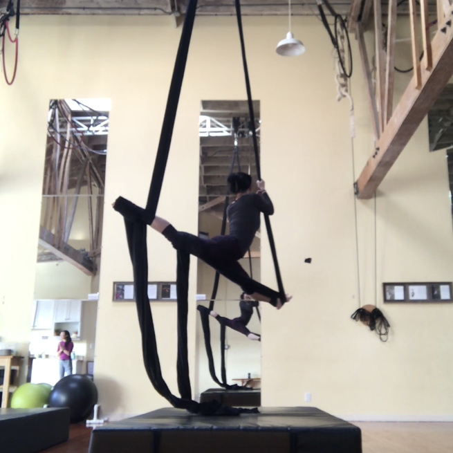

Baking
I love to bake! I have some commentary here. For up to date work since February 2018, you can check out my Instagram. I've also started a cookie delivery business internally at Mixpanel, which you can check out here.

Aerial Silks
I've been doing aerial silks since April 2017, and I love it. It requires strength and grace, and it's so rewarding when you can finally execute a move you've been eyeing. View my progress on Instagram.
Writing
Every now and then, I'd write down something that's been on my mind. Take a look at some of my work on Medium.
Art
Since I was young, I enjoyed drawing, especially with pencil and pastel portraits. You can see some of my work and attempts at digital art on DeviantArt. Unfortunately, it's not something I update anymore.